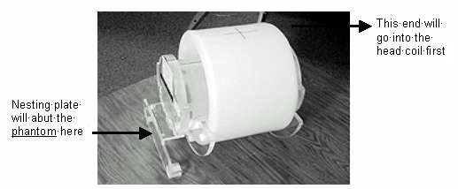
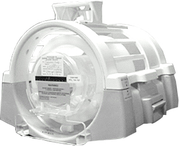
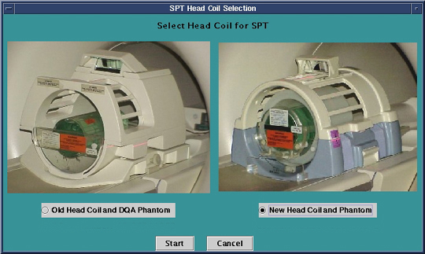
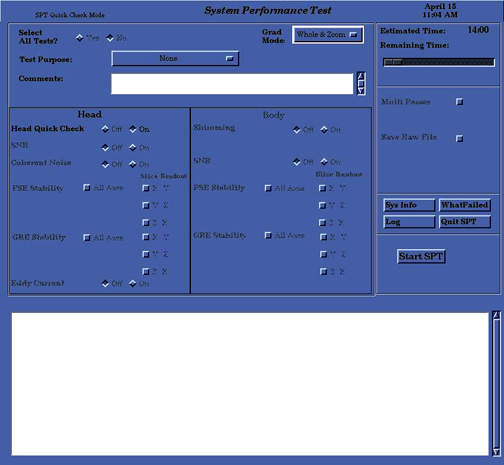
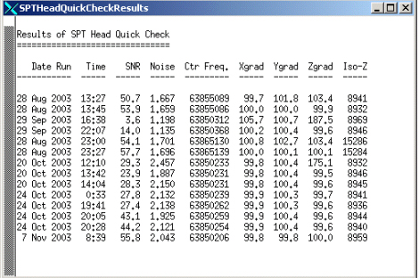

Proprietary to General Electric Company
Direction 5440001-3, Rev# 6
Signa HDxt Service Methods
Module Version 3.0, Version Date 11/2/10
Proprietary to General Electric Company |
The System Performance Test (SPT) provides a means of quickly verifying that all critical parameters that affect image quality are within specification. The data generated by SPT are useful for both local and global trending, and for additional automated interpretation by processes that are not part of SPT.
Table 1 identifies the parameters that SPT evaluates (which are critical to image quality) that are included in the Quick Check. The Quick Check uses only the DQA-III phantom in the head coil. It is intended to be used daily by the customer as a fast verification of the basic functionality of the scanner. The time for data collection and processing is approximately seven minutes. For TwinSpeed, each GradMode is tested separately.
Table 1: Parameters
| PARAMETERS | IN QUICK CHECK |
| Center Frequency | Yes |
| Gradcal | Yes |
| Z-isocenter | Yes |
| SNR | Yes (See Note) |
| NOTE: | SNR Will be reported via the Quick Head Check Viewer. However this is for customer trending purposes only. |
To set up and run SPT Head Quick Check, three general tasks must be completed:
If in application mode, cancel out of any previous exams. Click on [End Exam].
Position the DQA phantom in the head coil and establish a landmark.
Invoke SPT Head Quick Check from the Common Service Desktop Image Quality tab.
Place the Head Coil on the patient table.
If using the Signa classic head coil and DQA-III phantom, the DQA-III phantom fits in the Head Coil only one way. Notice the small tabs on one end flange of the DQA-III phantom. These tabs go in the Head Coil first (see Illustration 3). Place the DQA-III phantom in the Head Coil on the patient table (see Illustration 4).
If you're using the newer Split Head Coil, place the split head coil on the patient table. The split head coil phantom fits in the new head coil only one way. (See Illustration 1. Place the phantom in the head coil. Refer to Illustration 2.
Illustration 1: New Phantom Orientation

Illustration 2:

Illustration 3: DQA III Phantom Orientation

Illustration 4: DQA-III Phantom Position in the Head Coil

Landmark on the axial line on the DQA-III phantom in the head coil.
| NOTE: | Test functionality and system functionality may be adversely affected if the previous exam is not terminated. Click on [End Exam] to terminate any previous exam. It is not necessary to press <New Pt>as SPT automatically enters the scan protocol when it is invoked via the MR Tools menu. |
Illustration 5: Starting SPT Head Quick Check

Select [SPT Head Quick Check] from the IQ tab on the Service Desktop.
Start SPT Quick Head Check. See Illustration 5.
Software will prompt user for old or new head coil and DQA phantom. The color of the phantom will depend on the system type, (1.5T, 3.0T, 3T/94). See Illustration 6. Select Coil type then click [Start].
Choose test purpose.
Only applicable tests will be preselected. See Illustration 7. For TwinSpeed, SPT Quick Check should be run for both GradModes.
Illustration 6: Old and New Head Coils

| NOTE: | There is be a choice of coils available only for the 1.5T systems. For the 3.0 T systems, there is only one coil setup. |
Illustration 7: System Performance Test Menu

Click the Test Purpose pull-down menu and select a purpose for running the test (e.g., “Quality Assurance”).
Click on [Start SPT].
Test option for clinical users is limited to Quick Check. After options are chosen and the test is started, data collection and processing proceed without further user input. (i.e., you are not required to select protocols, pre-scan, scan, reposition phantoms, or initiate data analysis processes while SPT is running.)
For TwinSpeed, when both GradModes are selected, the ranges of tests are run first with the Whole-Body gradient and then with the Zoom Gradient. With multiple passes, both GradModes are completed before moving onto the next pass.
When an SPT run is started, a status window is displayed that indicates all selected test options. As each individual test is running, a message is displayed in the window indicating what data is being collected or processed. Start time and estimated completion time are also displayed in the status window. For TwinSpeed, the message window shows the GradMode currently being used.
SPT can be aborted at any time by selecting [Quit SPT]. If you abort the test before completion, valid test results that were created prior to the abort are preserved.
To view results of Head Quickcheck, select Utilities option of CSD. Then select View SPT Head Quick Check Results. Then select Click here to start this tool. See Illustration 8.
Illustration 8: Starting SPT Head Quick Check Results

The window shown in Illustration 9 will appear. It will display data from the last 20 passes of Head Quick Check.
Illustration 9: Test Results Screen

If there is a stop scan condition, such as a hardware error, during a run of SPT, it is a good idea to reboot the system. This condition may be caused by the test software being out of sync with the scan software. The only way to clear this condition is to reboot. Follow these instructions:
Right-click on the desktop wallpaper area, and select [Service Tools] from the root menu, then select [Logout]. When Signa logout is complete, a login screen appears. It is not necessary to perform a complete reboot.
Restart the system software by double-clicking on the Signa icon, then enter the password adw2.0 and press <Enter>. Allow initialization to be fully completed before any user interaction.
Continue with the SPT test.
There are five utilities that are useful when you use SPT. To view a short description of them, refer to the following:
Exit SPT Window: If a problem occurs when exiting SPT, and nothing else seems to work, click on [Exit] from the window function pulldown menu (upper-left corner of SPT window). This closes all SPT windows, and kills all processes that run the SVAT scripting.
Sptreset: If a problem occurs when exiting SPT in an unusual manner, and the system seems to be in an unusual configuration, type the following in a C-Shell:cd /usr/g/service/cclass/spt <Enter>, sptreset<Enter>. This puts all the files and configuration values back in their correct position.
PRUNE: Prune is used to take out trend file entries.
”T” File Cleanup: "T" File Cleanup is a file space management tool. It cleans up the /usr/g/service/data directory. See the procedure for "T" File Cleanup for more information on how to run it.
PROBLEM 1: You cannot have any duplicate exam numbers when running SPT.
SOLUTION 1: Before running SPT, go into the Browser desktop and remove any duplicate exam numbers.
PROBLEM 2: If the MRConfig file size exceeds 16383, the SPT Head Quick check will crash (this problem is more likely to occur in mobiles). To verify the file size:
Open a [C-shell] on the Service Desktop.
Type: cd /w/config and press <Enter>.
Type ls -l MR* and press <Enter>. Below is an example of the files.
Illustration 10: File Examples

SOLUTION 2: Deleting 2 lines of comments fixes the problem. (Edit the file, remove two "#" lines and save.)
To perform the fix:
Type: gedit MRconfig.cfg and press <Enter>.
Delete any two lines that begin with "#" (i.e. comment lines).
Save and Exit the file using the jot toolbar.